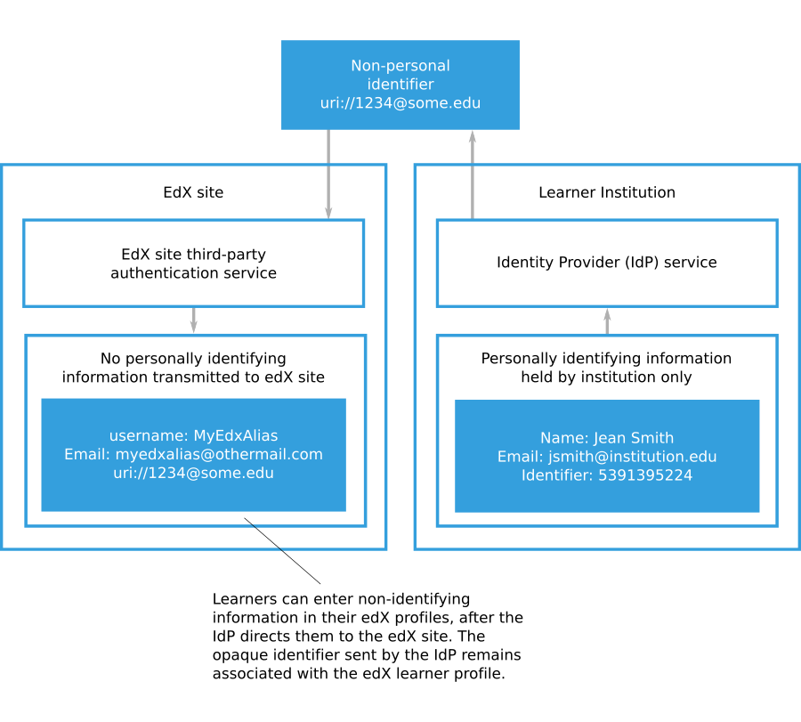
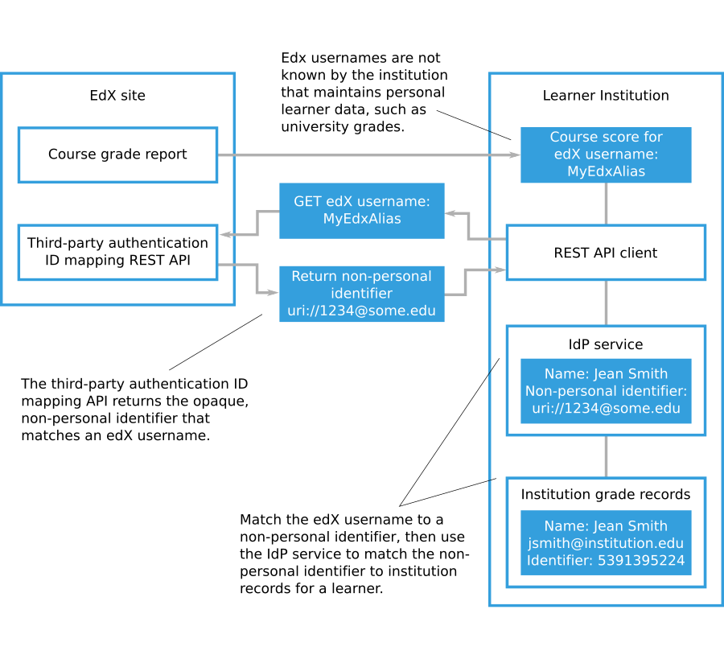

4.23.6. Eliminating PII From Third-Party Authentication#
Open edX sites and Open edX Edge do not require any personally identifiable information (PII) about learners during third-party authentication. PII is information that can be used to reveal an individual’s identity, such as a name. Your identity provider (IdP) service can send only non-personal identifiers to create Open edX site accounts for learners. If you configure third-party authentication in this way, the Open edX site never receives PII from your organization.
Note
The types of information that constitute PII and requirements for handling it depend on the laws and regulations that apply to your organization. The information in this documentation is intended to explain how Open edX sites can be configured to handle learner data. You cannot rely on this documentation as a source of legal guidance.
4.23.6.1. Creating Open edX Learner Accounts Without Transmitting PII#
After you have configured a third-party authentication profile for an Open edX site, the site’s sign-in page will display a button for users to access your IdP service. Learners will access your IdP service and authenticate using their organization credentials. Your IdP service will direct learners back to the Open edX site’s sign-in screen with an authentication token.
The IdP authentication token includes an identifying string for a learner. This identifier serves as a link between the identifying information that your organization maintains for a learner and the Open edX account for that learner. The identifying string does not need to include any PII for the learner. The identifying string is sometimes referred to as an opaque identifier because it does not make the identity of the learner visible.
When a learner uses third-party authentication to sign in to an Open edX site for the first time, the Open edX site creates a learner account. The new Open edX learner account is permanently associated with the identifying string included in the IdP authentication token. Learners will be prompted to create profiles by entering Open edX usernames, email addresses, and other information in their accounts. Learners can take steps to minimize the PII in their profiles. For more information, see Minimizing PII in Account Profiles.
The following diagram shows how an IdP can direct a learner to an Open edX site to create a learner account, without transmitting any PII.
{kind=link}
You can download a report containing grades for all learners in the Open edX courses that you run. The report includes the Open edX username for each learner enrolled in the course, but the usernames may not correspond to learner records that your organization maintains. If you need to match the scores for Open edX site learners to the learner records that your organization maintains, you can use the third- party authentication ID mapping REST API to retrieve the user ID SAML attribute and matching Open edX username for a learner. For more information about grade reports for Open edX courses that you run, see Generate a Grade Report for All Learners in a Course.
The following diagram shows how an organization that uses third-party authentication can match non-personally identifying Open edX learner usernames with the records that the organization holds for those learners.
{kind=link}
4.23.6.2. Minimizing PII in Account Profiles#
When your IdP directs a learner to an Open edX site for the first time, the learner enters information to create an Open edX site account. The basic information required for an Open edX site account is an email address, full name, public username, password, and country. Learners may also provide additional personal details such as gender, year of birth, and educational background. While course teams have access to full registration information for learners enrolled in their courses, only public usernames are used to identify learners in course discussions and other public-facing course interactions.
To minimize PII stored on an Open edX site, learners can limit the information in their Open edX account profiles to the basic information required for an Open edX site account. Additionally, learners may use random or nondescript public usernames and create non-identifying email addresses to receive course updates.
If you want to avoid transmitting PII for the Open edX learner accounts that use third-party authentication, you should not include personally identifying information in the authentication token. The only piece of information that is required in the authentication token is the user ID, which should not be personally identifying.
For more information about configuring the information in a third-party authentication token, see Configure the SAML Identity Provider.
4.23.6.3. PII Considerations with SAML#
Organizations that use SAML to integrate their IdPs with Open edX need to understand what personal information is provided to Open edX when users sign in using SAML.
When a user uses SAML or Shibboleth to sign in to Open edX, the IdP authoritatively asserts pieces of information about the user.
Each piece of information is called a SAML attribute. Each attribute has a name and a formal identifier that is called an object identifier (OID) uniform resource name (URN).
The following table lists some common attributes.
Name |
OID URN |
Example Value |
User ID |
|
123456789 |
Full Name |
|
Donna Noble |
First Name |
|
Donna |
Last Name |
|
Noble |
|
||
eduPersonPrincipalName |
|
|
eduPersonEntitlement |
|
For more information about eduPersonPrincipalName and
eduPersonEntitlement, see eduPersonPrincipalName and
eduPersonEntitlement on the eduPerson Object Class Specification page.
When a new user uses SAML to sign in to Open edX, the IdP sends information about the user to Open edX in the form of these attributes. These attributes can be used to pre-fill the registration form.
For example, when a user signs in, their server may provide the following information.
"urn:oid:0.9.2342.19200300.100.1.1: 123, urn:oid:2.5.4.3: John Smith,
urn:oid:0.9.2342.19200300.100.1.3: jsmith@school.edu"
Open edX saves the user ID because it is required to match future sign-in
attempts to the correct user account. The full name (John Smith) and email
(jsmith@school.edu) is pre-filled on the registration form, but if the user
edits those, Open edX saves only the new changed version. (For example, if the
user changes the email to jsmith@example.com, Open edX would record the
user’s email as jsmith@example.com and would not have any record of the
jsmith@school.edu address.)
By default, Open edX expects the standard User ID field
(urn:oid:0.9.2342.19200300.100.1.1) and uses that as the unique external
ID. Open edX can accept any set of attributes that a SAML IdP sends, as long as
one of the attributes is a unique, permanent identifier for the user being
authenticated. The URN or OID of the unique identifier must be specified in the
Open edX “Provider Configuration (SAML IdPs)” profile for the organization
(part of the Django administration console) in the User ID Attribute
field.
If you want to configure Open edX to always store all of the attributes that the external IdP sends for each user, you can enable that with a setting, as follows.
Sign in to the Django administration console for your base URL. For example,
http://{your_URL}/admin.Go to the SAML Configuration page, and then select Add SAML Configuration. (Do not go to the SAML Provider Configuration page.)
In the Other Config Str section, add the following code.
"EXTRA_DATA": [ "attributes" ]
This setting causes all the attributes to be saved in the
social_auth_usersocialauth table’s extra_data column for every new SAML
user. This data is only accessible by accessing the database directly or by
going to the User social auths page of the Open edX LMS Django
administration console.
For organizations that want to avoid sending any personally identifiable information to Open edX during the SAML sign in or registration process, we recommend that the organization configure their SAML IdP to only send a single attribute: a unique, permanent, opaque user identifier. This should be a value that uniquely identifies any learner or staff member, but is different from their organization ID or any other identifier they may have.
For reporting and analytics purposes when using an opaque user identifier, the organization can use the Third Party Auth ID Mapping API to convert Open edX user IDs found in reports or analytics back to these opaque organization user identifiers. Organization partners can then convert each opaque user identifier back to the official learner ID.